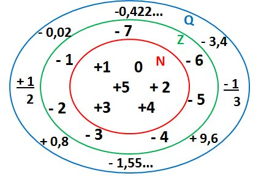
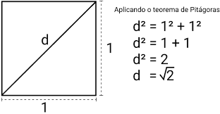
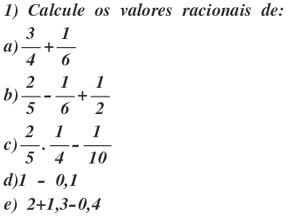

Os Números Racionais surgiram da necessidade de representar partes de um inteiro. No Egito Antigo, durante inundações do Rio Nilo , muitas terras ficavam submersas, e isso fazia com que elas recebessem nutrientes. Essas terras tornavam-se muito férteis para a agricultura.
OQUE SÃO NUMERO RACIONAIS?São elementos de um conjunto numérico formado por todos os números que podem ser escritos na forma de fração. O conjunto dos números racionais é formado por todos os elementos que podem ser escritos na forma de fração. Assim, se o número pode ser representado por uma fração, então ele é um número racional.
As operações de adição, subtração, multiplicação ou divisão entre irracionais podem ter como resultado um número racional ou um número irracional. Exemplos: √2 + √3. √2.√3 = √6. √2 – √3. √2/√3 = √6/3. São números que pertencem a I. Exemplos: √2 + (1 – √2) = 1. √2. √8 = 4. √2 – √2 = 0. √8/√2 = 2. São todos números racionais.
exercicios numeros-racionais
RESULTADO DO EXERCICIO: A)0.91666666666 B)0.73333333333 C)0.28095238095 D)0.9 E)2.9